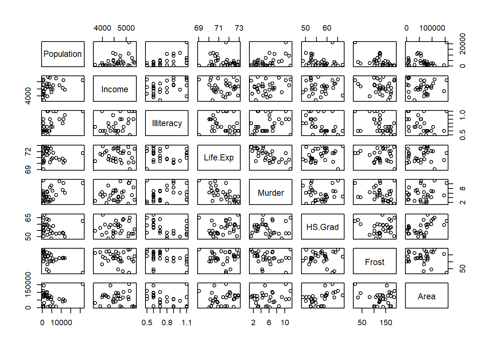
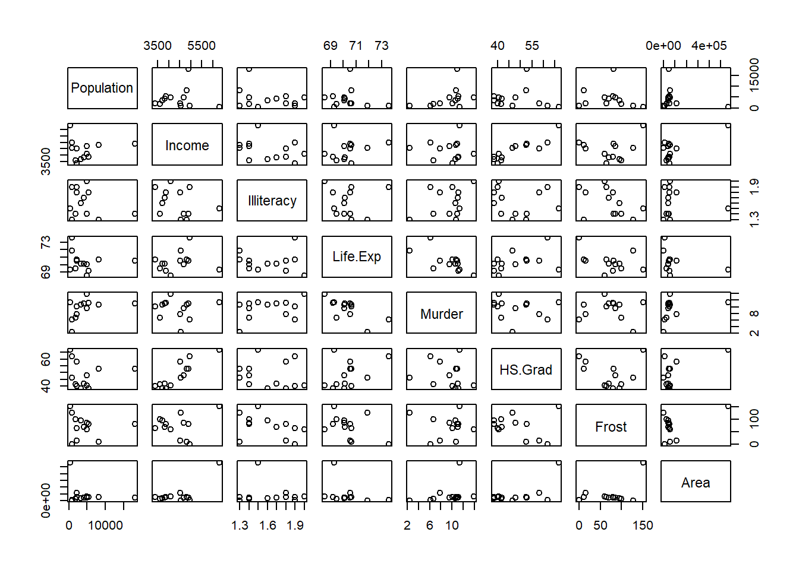
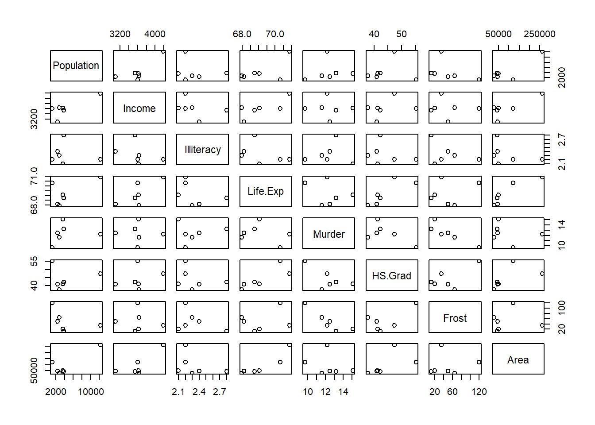

8 Vectorized programming and mapping functions
In this chapter we continue the study the art of R programming. An important topic is a set of tools operating on objects like matrices, dataframes and lists as wholes.
8.1 Mapping functions to a matrix
What is understood by a mapping function and of what use are such functions?
-
The function
apply().What three arguments are required?
Suppose the third argument is a function. How are the arguments of this function used within
apply()?
What is the result of the instruction
apply(is.na(x),2,all)?What is the result of the instruction
x[ ,!apply(is.na(x), 2,all)]?What is the result of the instruction
x[ ,!apply(is.na(x), 2,any)]?Set the random seed to 137921. Obtain a matrix \(\mathbf{A}:10 \times 6\) of random \(n(0, 1)\) values. Use
apply()to find the \(10\%\) trimmed mean of each row.
The usage is illustrated in the following diagram.

Note the difference between the function
ifelse()and the control statement:if-else.What arguments are required?
Study the help file in detail.
-
The function
outer(). -
Work through the following examples and note in particular how the above functions are used together:
Find the maximum value(s) in each column of the
LifeCycleSavingsdata set.Use
apply()together withcut()to divide each column of the LifeCycleSaving data set into low, medium and high.Use
apply()to plot each column of theLifeCycleSavingdata set against the ratio ofpop75topop15on the x-axis.Use
apply()to find the coefficient of variation of each column of theLifeCycleSavingdata set.Use
apply()together withcbind()andrbind()to obtain a table of the minimum and the maximum values of each column of the LifeCycleSaving data set.Repeat (v) using the airquality data set with and without the elimination of the NAs by using an appropriate function definition in the call to
apply().Use
sweep()to convert theLifeCycleSavingdata set into standardized scores. Couldapply()also be used for this task? Discuss.Use
ifelse()to convert negative values in a given vector to zero leaving positive values and missing values unchanged. Illustrate.
8.2 Mapping functions to vectors, dataframes and lists
lapply (split (data.frame (state.x77),
cut (data.frame (state.x77)$Illiteracy, 3)), pairs)
#> $`(0.498,1.27]`
#> NULL
#>
#> $`(1.27,2.03]`
#> NULL
#>
#> $`(2.03,2.8]`
#> NULLNote: in order to see all graphs in the R-GUI it is necessary to issue the command
par(ask=TRUE) before calling the function lapply().
- Use
lapply()to produce histograms of each of the variables in thestate.x77data set such that each histogram has as title the correct variable name. The \(x\)- and \(y\)-axis must also be labelled correctly.
8.3 The functions: mapply(), rapply() and Vectorize()
- To apply a function to more than one list,
mapply()is a multivariate version ofsapply(). The first argument tomapply()is a function followed by the arguments for that function. The first argument function is applied to each of the elements in the following arguments.
mapply (function(x,y,z) { list (min (c(x,y,z)), max (c(x,y,z))) },
x = c(2, 3), y = c(4, 5), z = c(1, 8))
#> [,1] [,2]
#> [1,] 1 3
#> [2,] 4 8- Study the help-files of
rapply()andVectorize().
8.4 The mapping function tapply() for grouped data
Study the arguments of
tapply().Consider the
LifeCycleSavingsdata set. Create an objectddpigrpthat groups theLifeCycleSavingsdata into four groups G1, G2, G3 and G4 such that G1 members haveddpiwithin \((0, 2.0]\), G2 members haveddpiwithin \((2.0, 3.5]\), G3 members haveddpiwithin \((3.5, 5.0]\), and G4 members haveddpilarger than \(5.0\). Usetapply()to obtain the mean aggregate personal savings of each of the groups defined byddpigrp.If it is needed to break down a vector by more than one categorical variable, a list containing the grouping variables is used as the second argument to
tapply(). Illustrate this by finding the mean aggregate personal savings of the groups inddpigrpbroken down by thepop15rating.In order to use
tapply()on more than one variable simultaneouslyapply()can be used to maptapply()to each of the variables in turn. Study the following command and its output carefully:
ddpigrp <- cut (LifeCycleSavings$ddpi,
breaks = c(0, 2, 3.5, 5, max(LifeCycleSavings$ddpi)),
labels = paste0 ("G", 1:4))
apply (LifeCycleSavings [,c (1, 3, 4)], 2, function(x)
tapply (x, ddpigrp, mean))
#> sr pop75 dpi
#> G1 7.855385 1.790769 712.1677
#> G2 8.230625 2.456250 1497.0731
#> G3 11.959000 3.189000 1569.4910
#> G4 11.831818 1.834545 584.6964- If
tapply()is called without a third argument it returns a vector of the same length than its first argument containing an index into the output that normally would be produced. Illustrate this behaviour and discuss its usage.
8.5 The control of execution flow statement if-else and the control functions ifelse() and switch()
- The primary tool for conditional computations is the
ifstatement. It takes the form:
if (logical condition evaluating to either TRUE or FALSE)
{
First set consisting of one or more R expressions
}
else
{
Second set consisting of one or more R expressions
}
Expression3In the above the
elseand its accompanying expression(s) are optional.If-else statements can be nested.
Remember that the function
ifelse()operates on objects as wholes as illustrated below:
xx <- matrix(1:25, ncol=5)
xx
#> [,1] [,2] [,3] [,4] [,5]
#> [1,] 1 6 11 16 21
#> [2,] 2 7 12 17 22
#> [3,] 3 8 13 18 23
#> [4,] 4 9 14 19 24
#> [5,] 5 10 15 20 25
ifelse(xx < 10, 0, 1)
#> [,1] [,2] [,3] [,4] [,5]
#> [1,] 0 0 1 1 1
#> [2,] 0 0 1 1 1
#> [3,] 0 0 1 1 1
#> [4,] 0 0 1 1 1
#> [5,] 0 1 1 1 1- Note that the function
match()can be used as an alternative to multiple if-else statements in certain cases. The functionmatch()takes as first argument a vector,x, of values to be matched and as second argument,table, a vector of possible values to be matched against. A third argumentnomatch = NAspecifies the return value if no match occurs. See the example below:
- The following example provides an illustration of the usage of
match():
month.num <- 5:9
month.name <- c("May", "June", "July", "Aug", "Sept")
new.vec <- month.name [match (airquality [, "Month"], month.num)]
out <- data.frame (airquality [ ,1:5], MonthName = new.vec,
Day = airquality$Day)
out[c(1:5,148:153), ]
#> Ozone Solar.R Wind Temp Month MonthName Day
#> 1 41 190 7.4 67 5 May 1
#> 2 36 118 8.0 72 5 May 2
#> 3 12 149 12.6 74 5 May 3
#> 4 18 313 11.5 62 5 May 4
#> 5 NA NA 14.3 56 5 May 5
#> 148 14 20 16.6 63 9 Sept 25
#> 149 30 193 6.9 70 9 Sept 26
#> 150 NA 145 13.2 77 9 Sept 27
#> 151 14 191 14.3 75 9 Sept 28
#> 152 18 131 8.0 76 9 Sept 29
#> 153 20 223 11.5 68 9 Sept 30- The function
switch()provides an alternative to a set of nested if-else statements. It takes as first argument,EXPR, an integer value or a character string and as second argument,..., the list of alternatives. As an illustration:
centre <- function(x, type)
{ switch(type,
mean = mean(x),
median = median(x),
trimmed = mean(x, trim = 0.1))
}
x <- rcauchy(10)
x
#> [1] 0.06789269 2.34376407 0.18461010 -0.28450567
#> [5] -4.03374036 0.21398886 -0.79638326 -1.28803986
#> [9] 0.19799170 3.93919518
centre(x,"mean")
#> [1] 0.05447735
centre(x,"median")
#> [1] 0.1262514
centre(x,"trimmed")
#> [1] 0.07991483- The two logical control operators
&&and||are useful when using if-else statements. These two operators operate on logical expressions in contrast to the operators&and|which operate on vectors/matrices.
8.6 Loops in R
-
forloops: The general form is
This type of loop is useful if it is known in advance how many times the statements in the loop are to be performed. In the above definition values can be either a vector or a list with elements not restricted to be numeric:
for (i in 1:26) cat(i, letters[i],"\n")
#> 1 a
#> 2 b
#> 3 c
#> 4 d
#> 5 e
#> 6 f
#> 7 g
#> 8 h
#> 9 i
#> 10 j
#> 11 k
#> 12 l
#> 13 m
#> 14 n
#> 15 o
#> 16 p
#> 17 q
#> 18 r
#> 19 s
#> 20 t
#> 21 u
#> 22 v
#> 23 w
#> 24 x
#> 25 y
#> 26 z
for (letter in letters) cat(letter, "\n")
#> a
#> b
#> c
#> d
#> e
#> f
#> g
#> h
#> i
#> j
#> k
#> l
#> m
#> n
#> o
#> p
#> q
#> r
#> s
#> t
#> u
#> v
#> w
#> x
#> y
#> zConsider a list consisting of several matrices, each with different numbers of rows but the same number of columns. Write an R function that will create a single matrix consisting of all the elements of the given list concatenated by rows.
-
whileloops: The general form is
This type of loop continues while condition evaluates to TRUE.
The command next is used to skip over any remaining statements in the loop and continue executing. The command break causes the immediate exit from the loop. In nested loops these commands apply to the most recently opened loop.
-
repeatloops: The general form is
This type of loop continues until a break command is encountered.
Remember that many operations that might be handled by loops can be more efficiently performed in R by using the subscripting tools discussed earlier.
As a further example we will consider the calculation of the Pearson chi-squared statistic for the test of independence in a two-way classification table:
\[ \chi^2_p = \sum_{i=1}^r \sum_{j=1}^c \frac{(f_{ij}-e_{ij})^2}{e_{ij}} \]
with \(e_{ij} = \frac{f_{i.}f_{.j}}{f_{..}}\) the expected frequencies. This statistic can be calculated in R without using loops as follows:
fi. <- ftable %*% rep (1, ncol (ftable))
f.j <- rep (1, nrow (ftable)) %*% ftable
e <- (fi. %*% f.j)/sum(fi.)
X2p <- sum ( (ftable-e)^2 /e)Explicit loops in R can potentially be expensive in terms of time and memory. The functions apply(), tapply(), sapply() and lapply() should be used instead if possible. The expected frequencies in the previous example can, for example, be obtained as follows:
8.7 The execution time of R tasks
The functions system.time() and proc.time() provide information regarding the execution of R tasks.
-
proc.timedetermines how much real and CPU time (in seconds) the currently running R process has already take:
proc.time() # called with no arguments
#> user system elapsed
#> 0.92 0.51 1.67-
system.time(expr)calls the functionproc.time(), evaluatesexpr, and then callsproc.time()once more, returning the difference between the twoproc.time()calls:
system.time (hist (rev (sort (rnorm (1000000)))))#> user system elapsed
#> 0.11 0.00 0.11Note that user and system times do not necessarily add up to elapsed time exactly.
Write the necessary code using
proc.time()directly to obtain the execution time ofhist (rev (sort (rnorm (1000000)))).-
As an application of
system.time()andproc.time()perform the following simulation study: Given a covariance matrix \(\mathbf{S}:p \times p\) the task is to compute the corresponding correlation matrix. The execution times of the following three methods are to be compared:Direct elementwise calculation of \(r_{ij} = \frac{s_{ij}}{\sqrt{s_{ii}s_{jj}}}\) using two nested for loops;
Two applications of
sweep();Matrix multiplication where \(\mathbf{R}:p \times p = [diag(\mathbf{S})]^{-\frac{1}{2}} \mathbf{S} [diag(\mathbf{S})]^{-\frac{1}{2}}\) where \(diag(\mathbf{A})\) denotes the diagonal matrix formed from \(\mathbf{A}:p \times p\) by setting all its off-diagonal elements equal to zero.
Use var() and rnorm() to compute covariance matrices of different sizes \(p\) from samples varying in size \(n\). Study the role of \(n\) and \(p\) in the effectiveness (economy in execution time) of the above three methods. Display the results graphically. Remember that for valid comparisons the three methods must be executed with identical samples.